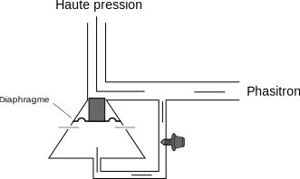
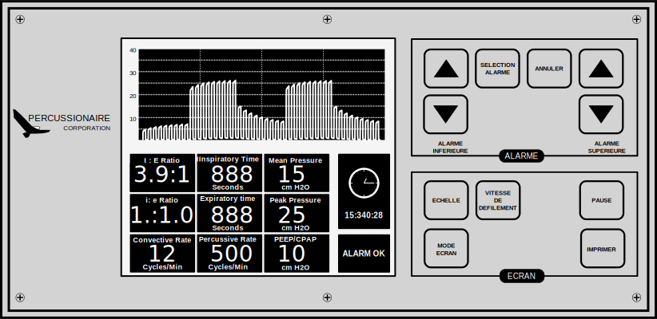

Ventilateur VDR-4
Service d'inhalothérapie
Juillet 2016
Généralités
Vocabulaire
- Convection
- Déplacement de volumes de gaz
Ventilation à haute fréquence
- Volumes inférieurs à l'espace mort
- Mécanismes d'échanges gazeux multiples
- Relation fréquence - volume courant
Relation fréquence - volume courant
- Ti = Tcycle * i:e
- Tcycle = 60 / fréquence
Composantes du système
Vue d'ensemble

Module de contrôle

- Entièrement pneumatique(ou presque)
- Chaque réglage est une valve
- 34 circuits logiques pneumatique
Fonctionnement d'une cartouche pneumatique
Le phasitron

Humidification

Monitorage
Paramètres de ventilation
Paramètres de ventilation
Paramètres d'amplitude
- Boutons vert
- Réglage d'un débit (module de contrôle)
- Amplification du débit par le phasitron (variable)
Amplitude des percussion à l'inspiration
- Paramètre de base (indépendant)
Amplitude des percussion à l'expiration
- Paramètre de dépendant
Amplitude des percussion augmentée
- Après 0,8 secondes
Stratégies de ventilation
Paramètres de départ
- Pression de crête inspiratoire de 30 cmH2O,
- Pression de crête expiratoire de 10 cmH2O,
- Amplitude de percussion augmentée (troisième phase) inactive,
- PEP non oscillante inactive,
- Temps inspiratoire (convection) de 2 secondes,
- Temps expiratoire (convection) de 2 secondes,
- Fréquence de percussion de 500 /minutes,
- Ration i : e de 1 : 1,
- FiO2 selon besoins.
Gestion de l’hypoxémie
- Augmentation de la FiO₂,
- Augmentation de l’amplitude à l’expiration,
- Augmentation de l’amplitude à l’inspiration,
- Augmentation du ratio Inspiration : Expiration (convection)
- Augmentation de la fréquence de percussion,
- Ajout d’une troisième phase
Gestion de l’hypercapnie
- Augmentation de l’amplitude à l’inspiration,
- Diminution de la fréquence de percussion,
- Diminution de l’amplitude à l’expiration,
- Augmentation de la fréquence convective en diminuant le temps expiratoire
- Diminuer le ratio inspiration sur expiration des percussions
- Ajout d’une troisième phase,
Gestion de l’hypocapnie
- Augmentation de l’amplitude à l’expiration,
- Diminution de l’amplitude à l’inspiration,
- Diminution de la fréquence convective par augmentation du temps expiratoire,
Sevrage
- Diminuer la FiO₂ (inférieure ou égale à 40 %),
- Diminuer l’amplitude à l’expiration (crête expiratoire à 10 mcH2O),
- Diminuer l’amplitude à l’expiration (crête inspiratoire en dessous de 34 cmH2O),
Valeurs extrèmes
| Paramètre | Valeur min. | Valeur max. |
|---|---|---|
| Crète inspiratoire | 20 cmH₂O | 45 cmH₂O |
| Crète expiratoire | 10 cmH₂O | 20 cmH₂O |
| Fréquence de percussion | 300 /min. | 700 /min. |
| i:e (percussion) | 1:5 | 1:1 |
| Fréquence de convection | 18 /min. | |
| I:E (convection) | 1:1 | 1,5:1 |
Monitorage
Complications
/